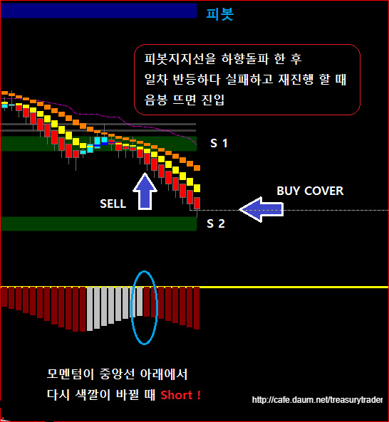
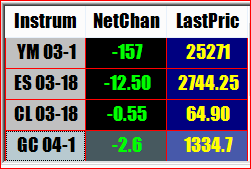
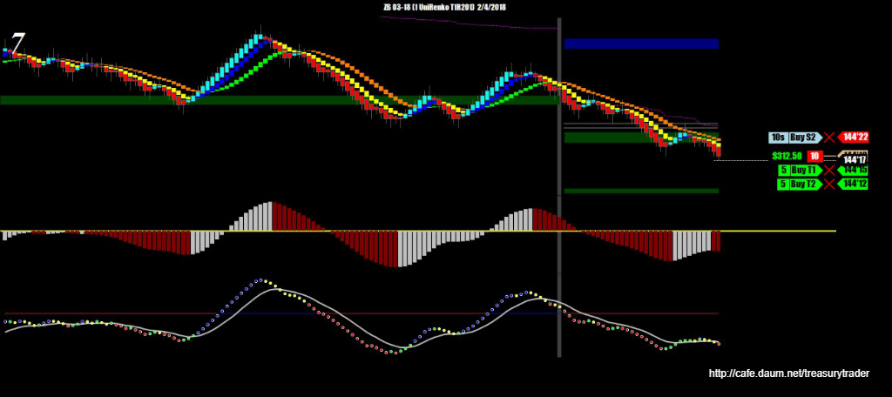
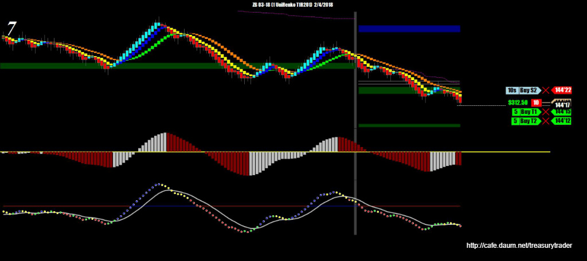
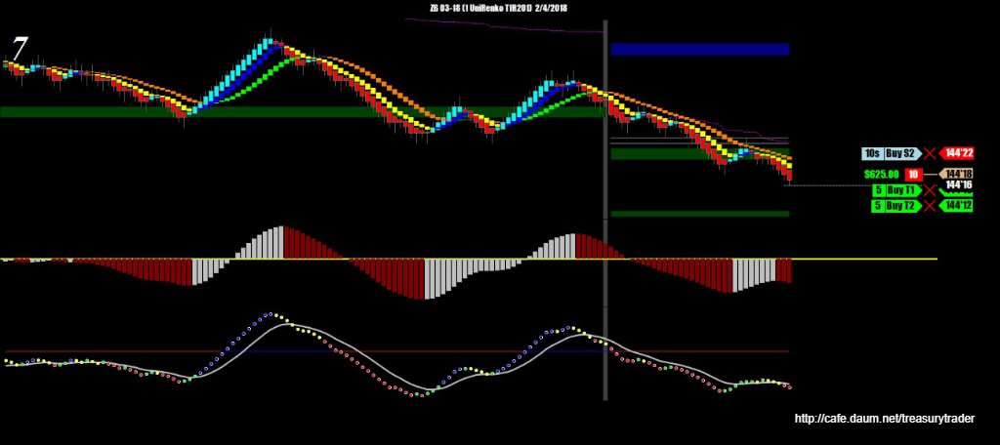
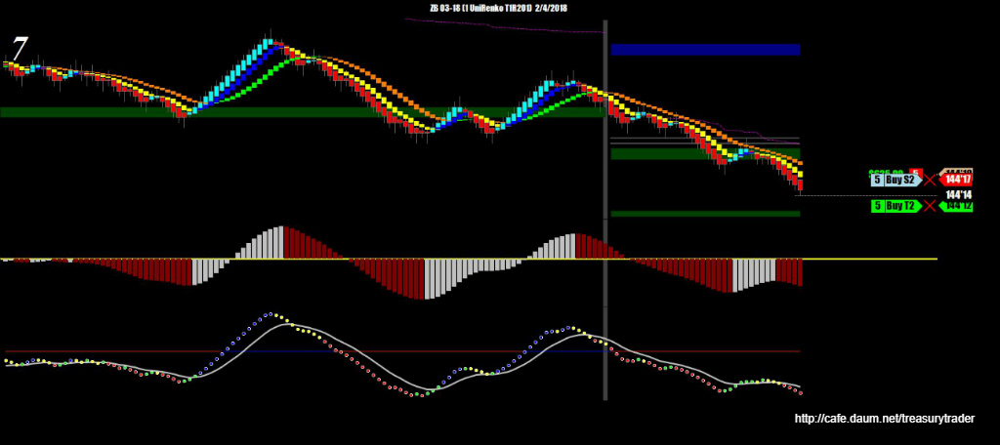
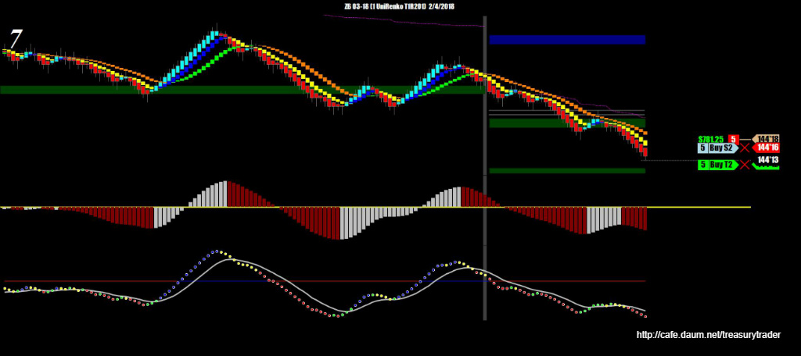
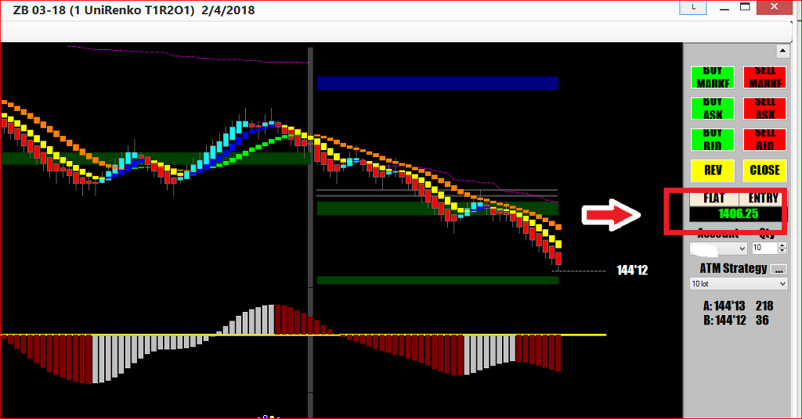

일요일 오후 3시 장외시장이 오픈하자마자 다우는 160포인트 하락으로 출발. 지금은 200포인트 하락중임
금요일 장대음봉의 위력이 아직도 남아있는듯..
일봉챠트상으로는 어제 종가와 저가가 거의 맞닿은 상황. 30년물 채권도 마찬가지.. 하락세가 살기가 등등 한 상황임
당연 하락쪽으로 매매를 시작함

오늘은 증시고 채권시장이고 크루드오일이고 금이고 모조리 하락중

피봇지지선을 쉽게 뚫어버리고 잠깐 눌렸다가 곧바로 또 밀리길래 음봉 뜨고 바로 진입






일요일 오후장에서 피봇지지선 돌파당한 후 눌렸다가 재진행 할 때 매도진입 오늘 수익 $1,406.25
내일 월요일장도 장이 크게 움직일걸로 예상 됨
가즈아 !!!!!!